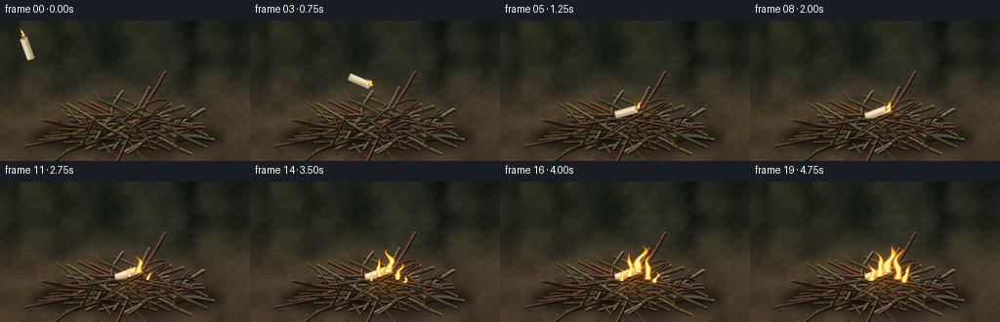
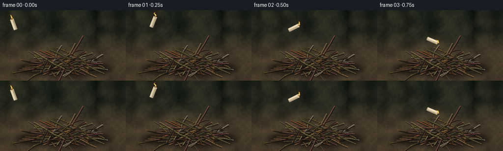

CODING AGENTS AS PIXEL WORLD MODELS
traex/GPT-6.1-Sol · material_0027
点击播放 · 原生 RGB 像素
逐轮保存的候选
回放视频、检查图与代码变化。
每份候选均可单独播放。实际图片检查记录在下方工具轨迹中。
候选 01播放与检查图
点击播放 · 原生 RGB 像素


展开代码变化
--- 上一保存版本
+++ 本次保存版本
@@ -0,0 +1,268 @@
+from pathlib import Path
+import math
+import numpy as np
+from PIL import Image, ImageDraw, ImageFilter
+import artifact_io
+
+ROOT = Path(__file__).resolve().parent
+W, H, S = 256, 144, 3
+SW, SH = W*S, H*S
+rng = np.random.default_rng(12045)
+Y, X = np.mgrid[0:SH, 0:SW].astype(np.float32)
+X /= S; Y /= S
+
+def noise_grid(w, h, seed):
+ r = np.random.default_rng(seed)
+ im = Image.fromarray(np.uint8(r.random((h,w))*255))
+ return np.asarray(im.resize((SW,SH),Image.Resampling.BICUBIC),dtype=np.float32)/255-.5
+
+def path_points(pts):
+ return [(int(x*S),int(y*S)) for x,y in pts]
+def line(draw,pts,fill,width):
+ draw.line(path_points(pts),fill=fill,width=max(1,round(width*S)),joint='curve')
+def ellipse(draw,box,fill):
+ draw.ellipse(tuple(round(v*S) for v in box),fill=fill)
+
+# A close, low-angle view of real dry ground, against an out-of-focus woodland.
+floor = 1/(1+np.exp(-(Y-69)/10))
+bg = np.zeros((SH,SW,3),np.float32)
+for c,(a,b) in enumerate([(36,75),(40,62),(31,45)]):
+ bg[:,:,c] = a*(1-floor)+b*floor
+n0=noise_grid(13,9,1); n1=noise_grid(60,38,2); n2=noise_grid(310,170,3)
+for c,amp in enumerate([21,18,12]):
+ bg[:,:,c] += n0*amp+n1*amp*.4+n2*floor*amp*.32
+# Very soft distant vertical tree shapes and sunlit foliage.
+for xx,ww,v in [(15,8,-10),(62,11,-12),(115,15,-9),(196,9,-16),(240,14,-10)]:
+ m=np.exp(-((X-xx)/ww)**2)* (1-floor)
+ bg += m[:,:,None]*np.array([v,v,v*.8])
+for xx,yy,rad,bright in [(43,23,26,13),(152,16,26,8),(222,58,13,11),(15,60,21,9)]:
+ m=np.exp(-((X-xx)**2+(Y-yy)**2)/(rad*rad))* (1-floor)
+ bg += m[:,:,None]*np.array([bright,bright*.8,bright*.43])
+background=Image.fromarray(np.uint8(np.clip(bg,0,255)))
+d=ImageDraw.Draw(background,'RGBA')
+# Tiny stones, gritty soil, dry fallen leaves, with focus increasing toward the pile.
+for j in range(1250):
+ x=rng.uniform(-5,261); y=rng.uniform(65,149)
+ rr=rng.uniform(.18,1.1)*(0.6+(y-65)/110)
+ shade=int(rng.uniform(42,94)); alpha=int(40+65*(y-65)/80)
+ ellipse(d,(x,y,x+rr*1.7,y+rr*.7),(shade,shade-9,shade-22,alpha))
+for j in range(65):
+ x=rng.uniform(-5,261); y=rng.uniform(82,148); r=rng.uniform(.5,2.4)
+ ellipse(d,(x-r,y-r*.38,x+r,y+r*.45),(33,28,22,160))
+ ellipse(d,(x-r*.75,y-r*.4,x+r*.8,y+r*.02),(100,86,65,100))
+for j in range(23):
+ x=rng.uniform(0,256); y=rng.uniform(97,146); le=rng.uniform(3,8)
+ a=rng.uniform(-2,2); vx=math.cos(a);vy=math.sin(a)*.4
+ p=[(x-vx*le,y-vy*le),(x-vy*2,y+vx*1.4),(x+vx*le,y+vy*le),(x+vy,y-vx)]
+ d.polygon(path_points(p), fill=(72,49,28,145))
+ line(d,[(x-vx*le,y-vy*le),(x+vx*le,y+vy*le)],(119,89,52,85),.35)
+# Contact shadow beneath the interwoven kindling.
+shadow=Image.new('RGBA',(SW,SH));sd=ImageDraw.Draw(shadow)
+ellipse(sd,(33,104,232,135),(5,4,3,153))
+ellipse(sd,(63,105,205,128),(4,3,2,90))
+shadow=shadow.filter(ImageFilter.GaussianBlur(5*S))
+background=Image.alpha_composite(background.convert('RGBA'),shadow).convert('RGB')
+
+# Fixed hand-built pile of actual tapering, bent, forked twigs.
+branches=[]
+for i in range(56):
+ if i<17:
+ cx=rng.uniform(94,168);cy=rng.uniform(110,123)
+ length=rng.uniform(75,159);angle=rng.uniform(-.26,.26)
+ else:
+ cx=rng.uniform(91,168);cy=rng.uniform(96,117)
+ length=rng.uniform(55,121);angle=rng.uniform(-.62,.62)
+ if i in (20,26,33,40,45): angle=rng.uniform(.6,1.1)*rng.choice([-1,1])
+ width=rng.uniform(.85,2.8)
+ vv=np.array([math.cos(angle),math.sin(angle)])
+ pp=np.array([-vv[1],vv[0]])
+ pts=[]
+ for q in range(7):
+ t=q/6; pos=np.array([cx,cy])+vv*((t-.5)*length)+pp*(math.sin(t*math.pi)*rng.uniform(-2.5,2.5))
+ pts.append(tuple(pos))
+ col=np.array([rng.uniform(95,143),rng.uniform(70,110),rng.uniform(43,79)])
+ if i%8==0: col=np.array([140,126,105])+rng.uniform(-10,10)
+ branches.append((pts,width,col,i))
+# A few brittle reed-like side shoots make the structure read as twigs, not logs.
+for i in range(24):
+ parent=branches[18+i%32]
+ pts0=parent[0]; k=int(rng.integers(2,5)); p=np.array(pts0[k]); direction=np.array(pts0[k+1])-p
+ a=math.atan2(direction[1],direction[0])+rng.choice([-1,1])*rng.uniform(.35,.8)
+ length=rng.uniform(11,32);v=np.array([math.cos(a),math.sin(a)])
+ pts=[tuple(p),tuple(p+v*length*.55+np.array([0,-1.5])),tuple(p+v*length)]
+ branches.append((pts,rng.uniform(.5,1),parent[2]*.92,100+i))
+
+def twig_layer(items):
+ out=Image.new('RGBA',(SW,SH));dr=ImageDraw.Draw(out)
+ for pts,wi,col,ident in items:
+ tr=np.random.default_rng(ident+787)
+ # Cast thin occlusion shadow and irregular dark bark silhouette.
+ line(dr,[(x+.8,y+1.1) for x,y in pts],(11,9,7,150),wi+1.1)
+ base=tuple(np.uint8(np.clip(col*.49,0,255)))+(255,)
+ line(dr,pts,base,wi+.5)
+ line(dr,[(x,y-.18) for x,y in pts],tuple(np.uint8(col*.81))+(255,),wi*.85)
+ line(dr,[(x-.14,y-wi*.18) for x,y in pts],tuple(np.uint8(np.minimum(255,col*1.14)))+(255,),wi*.36)
+ line(dr,[(x+.13,y+wi*.17) for x,y in pts],tuple(np.uint8(col*.62))+(170,),wi*.2)
+ # Short longitudinal peeling fibers, small knots and cross-grain scars.
+ for z in range(int(np.linalg.norm(np.array(pts[-1])-np.array(pts[0]))/1.8)):
+ f=tr.uniform(0,len(pts)-1.01);k=int(f);u=f-k
+ p=(1-u)*np.array(pts[k])+u*np.array(pts[k+1]);v=np.array(pts[k+1],dtype=float)-np.array(pts[k]);v/=np.linalg.norm(v)
+ n=np.array([-v[1],v[0]]);p+=n*tr.uniform(-wi*.33,wi*.33)
+ end=p+v*tr.uniform(.4,3)
+ c=col*tr.uniform(.5,1.3)
+ line(dr,[tuple(p),tuple(end)],tuple(np.uint8(np.minimum(255,c)))+(int(tr.uniform(80,175)),),tr.uniform(.1,.27))
+ for k in range(1,len(pts)-1):
+ if tr.random()<.44:
+ x,y=pts[k];rr=wi*.6
+ ellipse(dr,(x-rr,y-rr*.7,x+rr,y+rr*.65),tuple(np.uint8(col*.5))+(230,))
+ line(dr,[(x-rr,y-rr*.45),(x+rr*.8,y-rr*.15)],tuple(np.uint8(col*1.15))+(180,),.3)
+ # Exposed broken ends catch the light.
+ xx,yy=pts[-1];r=wi*.39
+ ellipse(dr,(xx-r,yy-r*.62,xx+r,yy+r*.62),tuple(np.uint8(col*1.19))+(240,))
+ return out
+# Almost all twigs are behind the candle; three fine twigs cross its lower edge.
+rear=twig_layer(branches)
+front=twig_layer([
+ ([(85,106),(111,101),(129,100),(151,104),(179,109)],1.4,np.array([119,96,66]),251),
+ ([(110,116),(126,105),(147,93),(168,83)],.85,np.array([133,110,77]),252),
+])
+static=Image.alpha_composite(background.convert('RGBA'),rear)
+material=np.array(rear)[:,:,3]/255
+material=np.maximum(material,np.array(front)[:,:,3]/255)
+
+# Render a short ivory wax candle, including its concave melted rim, wick and wax drips.
+def candle(cx,cy,angle):
+ im=Image.new('RGBA',(SW,SH)); dr=ImageDraw.Draw(im)
+ u=np.array([math.sin(angle),-math.cos(angle)]);v=np.array([math.cos(angle),math.sin(angle)])
+ def p(q,z): return tuple(np.array([cx,cy])+v*q+u*z)
+ length=21.5;radius=3.65
+ def local_ellipse(z,rx,rz,c):
+ pts=[p(math.cos(a)*rx,z+math.sin(a)*rz) for a in np.linspace(0,2*math.pi,41)]
+ dr.polygon(path_points(pts),fill=c)
+ # Thin rim of the far bottom end.
+ local_ellipse(-length/2,radius,1.1,(148,134,104,255))
+ for q in np.linspace(-radius,radius,44):
+ leftlight=np.exp(-((q+1.3)/2.8)**2)
+ c=np.array([165,151,121])+leftlight*np.array([78,76,70])
+ line(dr,[p(q,-length/2),p(q,length/2)],tuple(np.uint8(c))+(255,),.2)
+ # Uneven wax rivulets and a ridge down one side.
+ line(dr,[p(-2.8,-8),p(-3.1,-1),p(-2.8,8)],(247,234,201,255),.53)
+ line(dr,[p(.3,10),p(.65,7),p(.45,3),p(.3,2)],(237,221,185,255),.74)
+ line(dr,[p(.9,7),p(.9,2)],(153,132,96,180),.28)
+ local_ellipse(length/2,radius,1.35,(251,235,195,255))
+ local_ellipse(length/2+.12,2.75,.85,(145,117,75,255))
+ local_ellipse(length/2+.3,1.8,.52,(206,173,114,255))
+ wick0=p(-.15,length/2+.2);wick1=p(.15,length/2+2.3)
+ line(dr,[wick0,wick1],(27,21,17,255),.57)
+ ellipse(dr,(wick1[0]-.4,wick1[1]-.4,wick1[0]+.4,wick1[1]+.4),(252,139,32,255))
+ return im,wick1
+
+# Smooth advected smoke; the phase varies continuously, so no independent-frame noise.
+smoke_noise=noise_grid(44,36,65)
+def smoke_field(t,base,amount):
+ if amount<=0:return np.zeros((SH,SW),np.float32)
+ bx,by=base
+ d=by-Y
+ center=bx+ d*.23+ 2.8*np.sin(d*.17-t*2)
+ width=2.3+d*.16
+ shape=np.exp(-((X-center)/np.maximum(width,1))**2*.9)
+ density=shape*np.exp(-d/48)*np.clip(d/10,0,1)*np.clip((65-d)/18,0,1)
+ wav=.65+.2*np.sin(Y*.4+X*.21+t*2)+smoke_noise*.8
+ return np.clip(density*wav*amount,0,.26)
+
+# Flame is a luminous, semi-transparent noisy temperature field, not an outlined icon.
+def flame_field(specs,t):
+ f=np.zeros((SH,SW),np.float32)
+ for j,(bx,by,hh,ww,slant) in enumerate(specs):
+ phase=t*8.3+j*2.19
+ hh*=1+.10*math.sin(phase)+.06*math.sin(t*15.1+j*1.7)
+ h=(by-Y)/hh
+ bend=(np.sin(h*5+phase)*.9+np.sin(h*10-phase*.7)*.45)*ww*h
+ center=bx+bend+slant*h
+ wid=ww*(np.clip(1-h,0,1)**.68)*(.88+.18*np.sin(h*14+phase))+.12
+ r=np.abs(X-center)/wid
+ val=(1-r**1.8)*np.clip((1-h)*2.4,0,1)
+ val*=np.clip(h*16,0,1)
+ val*=np.clip((1-h)*16,0,1)
+ val=np.where((h>=0)&(h<=1),val,0)
+ # Fine flame wrinkles and irregular transparent edges.
+ val+=np.where((h>0)&(h<1)&(r<1.5),.07*np.sin(X*2.1+Y*.64-t*11)*np.sin(Y*.91+t*8),0)
+ f=np.maximum(f,np.clip(val,0,1))
+ return f
+
+frames=[]
+for idx in range(20):
+ t=idx/4
+ if idx<=4:
+ coords=[(28,29,-.34),(56,24,.38),(86,36,1.11),(112,62,1.96),(129,94,1.14)]
+ cx,cy,ang=coords[idx]
+ else:
+ cx=129;cy=95;ang=1.23
+ if idx==5: cy=93.8;ang=1.30
+ cand,wick=candle(cx,cy,ang)
+ scene=static.copy()
+ if idx>=4:
+ contact=Image.new('RGBA',(SW,SH));cd=ImageDraw.Draw(contact)
+ ellipse(cd,(115,94,147,101),(0,0,0,110))
+ contact=contact.filter(ImageFilter.GaussianBlur(1.3*S))
+ scene=Image.alpha_composite(scene,contact)
+ scene=Image.alpha_composite(scene,cand)
+ if idx>=4: scene=Image.alpha_composite(scene,front)
+ arr=np.array(scene.convert('RGB'),dtype=np.float32)
+ # The still-burning wick is present in every frame of the throw.
+ specs=[(wick[0],wick[1]-.1,8.8,2.2,-2.5 if idx<4 else .4)]
+ catch=np.clip((t-1.55)/2.5,0,1)
+ if catch>0:
+ specs.append((141,94,7+27*catch,2+4.1*catch,2.8))
+ if t>2.35:
+ k=np.clip((t-2.35)/2,0,1)
+ specs.extend([(132,98,6+23*k,1.5+3*k,1.3),(151,101,5+25*k,1.6+3.4*k,2.6)])
+ if t>3.2:
+ k=np.clip((t-3.2)/1.6,0,1)
+ specs.extend([(158,104,5+18*k,1.8+2.3*k,3),(124,102,5+16*k,1.2+2.7*k,1.8)])
+ smoke=smoke_field(t,(143,87),.035+.17*catch) if idx>=6 else smoke_field(t,wick,.025)
+ # Smoke blends into the atmosphere, retaining subtle curls.
+ arr=arr*(1-smoke[:,:,None])+np.array([139,141,135])*smoke[:,:,None]
+ # Warm diffuse reflected light intensifies on bark and the immediate ground.
+ glow=np.exp(-((X-wick[0])/13)**2-((Y-wick[1])/15)**2)*.3
+ glow+=np.exp(-((X-141)/27)**2-((Y-99)/18)**2)*catch*.9
+ arr+=glow[:,:,None]*np.array([53,24,4])*(.3+material[:,:,None]*.7)
+ # Charred bark and little spots of orange ember underneath the developing fire.
+ if catch>0:
+ ch=np.exp(-((X-143)/15)**2-((Y-100)/6)**2)*material*catch*.28
+ arr*=1-ch[:,:,None]
+ for k in range(10):
+ ex=130+k*2.6;ey=100+2*math.sin(k*2.8)
+ burn=math.exp(-((k-4)/5)**2)*catch*(.65+.25*math.sin(t*6+k))
+ e=np.exp(-((X-ex)/.62)**2-((Y-ey)/.28)**2)*burn
+ arr+=e[:,:,None]*np.array([183,62,8])
+ f=flame_field(specs,t)
+ # Bloom spreads outside the hot flame, without flattening its detailed yellow core.
+ fi=Image.fromarray(np.uint8(f*255))
+ near=np.asarray(fi.filter(ImageFilter.GaussianBlur(1.5*S)),dtype=np.float32)/255
+ wide=np.asarray(fi.filter(ImageFilter.GaussianBlur(6*S)),dtype=np.float32)/255
+ arr+=near[:,:,None]*np.array([40,13,0])+wide[:,:,None]*np.array([61,23,1])
+ a=np.clip(f*2.8,0,.96)
+ # Incandescent color rises from red transparent edges through gold to near-white.
+ temp=np.clip(f,0,1)
+ color=np.zeros_like(arr)
+ color[:,:,0]=255
+ color[:,:,1]=67+188*np.minimum(1,temp*1.22)
+ color[:,:,2]=4+183*np.clip((temp-.32)/.64,0,1)**1.5
+ arr=arr*(1-a[:,:,None])+color*a[:,:,None]
+ # A tiny blue foot remains at the candle wick, a recognizable candle flame signature.
+ blue=np.exp(-((X-wick[0])/1.5)**2-((Y-(wick[1]-1.1))/.65)**2)*.4
+ arr=arr*(1-blue[:,:,None])+np.array([67,104,158])*blue[:,:,None]
+ if idx>=11:
+ for k in range(3):
+ age=(t*.8+k*.31)%1
+ sx=140+k*6+5*age;sy=91-35*age
+ spark=np.exp(-((X-sx)/.32)**2-((Y-sy)/.52)**2)*(1-age)*catch*.75
+ arr+=spark[:,:,None]*np.array([150,65,8])
+ # Lens falloff is restrained. Grain is fixed to the scene, not temporally noisy.
+ vign=1-.14*(((X-128)/170)**2+((Y-78)/130)**2)
+ arr*=vign[:,:,None]
+ im=Image.fromarray(np.uint8(np.clip(arr,0,255))).resize((W,H),Image.Resampling.LANCZOS)
+ frames.append(np.array(im))
+artifact_io.save(np.stack(frames).astype(np.uint8),ROOT)
+print('Saved 20 RGB frames at 256x144, 4 fps.')
可观测工具轨迹
实际执行的命令与返回图片。
命令 1exit 0
/bin/bash -lc 'ls -la && cat prompt.txt && cat GENERATION_RULES.md && cat task_spec.json'
命令 2exit 0
/bin/bash -lc "cat artifact_io.py && python - <<'PY'
import PIL, numpy
print('Available:', PIL.__version__, numpy.__version__)
PY"命令 3exit 1
/bin/bash -lc "cat > generate.py <<'PY'
from pathlib import Path
import math
import numpy as np
from PIL import Image, ImageDraw, ImageFilter
import artifact_io
ROOT = Path(__file__).resolve().parent
W, H, S = 256, 144, 3
SW, SH = W*S, H*S
rng = np.random.default_rng(12045)
Y, X = np.mgrid[0:SH, 0:SW].astype(np.float32)
X /= S; Y /= S
def noise_grid(w, h, seed):
r = np.random.default_rng(seed)
im = Image.fromarray(np.uint8(r.random((h,w))*255))
return np.asarray(im.resize((SW,SH),Image.Resampling.BICUBIC),dtype=np.float32)/255-.5
def path_points(pts):
return [(int(x*S),int(y*S)) for x,y in pts]
def line(draw,pts,fill,width):
draw.line(path_points(pts),fill=fill,width=max(1,round(width*S)),joint='curve')
def ellipse(draw,box,fill):
draw.ellipse(tuple(round(v*S) for v in box),fill=fill)
# A close, low-angle view of real dry ground, against an out-of-focus woodland.
floor = 1/(1+np.exp(-(Y-69)/10))
bg = np.zeros((SH,SW,3),np.float32)
for c,(a,b) in enumerate([(36,75),(40,62),(31,45)]):
bg[:,:,c] = a*(1-floor)+b*floor
n0=noise_grid(13,9,1); n1=noise_grid(60,38,2); n2=noise_grid(310,170,3)
for c,amp in enumerate([21,18,12]):
bg[:,:,c] += n0*amp+n1*amp*.4+n2*floor*amp*.32
# Very soft distant vertical tree shapes and sunlit foliage.
for xx,ww,v in [(15,8,-10),(62,11,-12),(115,15,-9),(196,9,-16),(240,14,-10)]:
m=np.exp(-((X-xx)/ww)**2)* (1-floor)
bg += m[:,:,None]*np.array([v,v,v*.8])
for xx,yy,rad,bright in [(43,23,26,13),(152,16,26,8),(222,58,13,11),(15,60,21,9)]:
m=np.exp(-((X-xx)**2+(Y-yy)**2)/(rad*rad))* (1-floor)
bg += m[:,:,None]*np.array([bright,bright*.8,bright*.43])
background=Image.fromarray(np.uint8(np.clip(bg,0,255)))
d=ImageDraw.Draw(background,'RGBA')
# Tiny stones, gritty soil, dry fallen leaves, with focus increasing toward the pile.
for j in range(1250):
x=rng.uniform(-5,261); y=rng.uniform(65,149)
rr=rng.uniform(.18,1.1)*(0.6+(y-65)/110)
shade=int(rng.uniform(42,94)); alpha=int(40+65*(y-65)/80)
ellipse(d,(x,y,x+rr*1.7,y+rr*.7),(shade,shade-9,shade-22,alpha))
for j in range(65):
x=rng.uniform(-5,261); y=rng.uniform(82,148); r=rng.uniform(.5,2.4)
ellipse(d,(x-r,y-r*.38,x+r,y+r*.45),(33,28,22,160))
ellipse(d,(x-r*.75,y-r*.4,x+r*.8,y+r*.02),(100,86,65,100))
for j in range(23):
x=rng.uniform(0,256); y=rng.uniform(97,146); le=rng.uniform(3,8)
a=rng.uniform(-2,2); vx=math.cos(a);vy=math.sin(a)*.4
p=[(x-vx*le,y-vy*le),(x-vy*2,y+vx*1.4),(x+vx*le,y+vy*le),(x+vy,y-vx)]
d.polygon(path_points(p), fill=(72,49,28,145))
line(d,[(x-vx*le,y-vy*le),(x+vx*le,y+vy*le)],(119,89,52,85),.35)
# Contact shadow beneath the interwoven kindling.
shadow=Image.new('RGBA',(SW,SH));sd=ImageDraw.Draw(shadow)
ellipse(sd,(33,104,232,135),(5,4,3,153))
ellipse(sd,(63,105,205,128),(4,3,2,90))
shadow=shadow.filter(ImageFilter.GaussianBlur(5*S))
background=Image.alpha_composite(background.convert('RGBA'),shadow).convert('RGB')
# Fixed hand-built pile of actual tapering, bent, forked twigs.
branches=[]
for i in range(56):
if i<17:
cx=rng.uniform(94,168);cy=rng.uniform(110,123)
length=rng.uniform(75,159);angle=rng.uniform(-.26,.26)
else:
cx=rng.uniform(91,168);cy=rng.uniform(96,117)
length=rng.uniform(55,121);angle=rng.uniform(-.62,.62)
if i in (20,26,33,40,45): angle=rng.uniform(.6,1.1)*rng.choice([-1,1])
width=rng.uniform(.85,2.8)
vv=np.array([math.cos(angle),math.sin(angle)])
pp=np.array([-vv[1],vv[0]])
pts=[]
for q in range(7):
t=q/6; pos=np.array([cx,cy])+vv*((t-.5)*length)+pp*(math.sin(t*math.pi)*rng.uniform(-2.5,2.5))
pts.append(tuple(pos))
col=np.array([rng.uniform(95,143),rng.uniform(70,110),rng.uniform(43,79)])
if i%8==0: col=np.array([140,126,105])+rng.uniform(-10,10)
branches.append((pts,width,col,i))
# A few brittle reed-like side shoots make the structure read as twigs, not logs.
for i in range(24):
parent=branches[18+i%32]
pts0=parent[0]; k=int(rng.integers(2,5)); p=np.array(pts0[k]); direction=np.array(pts0[k+1])-p
a=math.atan2(direction[1],direction[0])+rng.choice([-1,1])*rng.uniform(.35,.8)
length=rng.uniform(11,32);v=np.array([math.cos(a),math.sin(a)])
pts=[tuple(p),tuple(p+v*length*.55+np.array([0,-1.5])),tuple(p+v*length)]
branches.append((pts,rng.uniform(.5,1),parent[2]*.92,100+i))
def twig_layer(items):
out=Image.new('RGBA',(SW,SH));dr=ImageDraw.Draw(out)
for pts,wi,col,ident in items:
tr=np.random.default_rng(ident+787)
# Cast thin occlusion shadow and irregular dark bark silhouette.
line(dr,[(x+.8,y+1.1) for x,y in pts],(11,9,7,150),wi+1.1)
base=tuple(np.uint8(np.clip(col*.49,0,255)))+(255,)
line(dr,pts,base,wi+.5)
line(dr,[(x,y-.18) for x,y in pts],tuple(np.uint8(col*.81))+(255,),wi*.85)
line(dr,[(x-.14,y-wi*.18) for x,y in pts],tuple(np.uint8(np.minimum(255,col*1.14)))+(255,),wi*.36)
line(dr,[(x+.13,y+wi*.17) for x,y in pts],tuple(np.uint8(col*.62))+(170,),wi*.2)
# Short longitudinal peeling fibers, small knots and cross-grain scars.
for z in range(int(np.linalg.norm(np.array(pts[-1])-np.array(pts[0]))/1.8)):
f=tr.uniform(0,len(pts)-1.01);k=int(f);u=f-k
p=(1-u)*np.array(pts[k])+u*np.array(pts[k+1]);v=np.array(pts[k+1])-np.array(pts[k]);v/=np.linalg.norm(v)
n=np.array([-v[1],v[0]]);p+=n*tr.uniform(-wi*.33,wi*.33)
end=p+v*tr.uniform(.4,3)
c=col*tr.uniform(.5,1.3)
line(dr,[tuple(p),tuple(end)],tuple(np.uint8(np.minimum(255,c)))+(int(tr.uniform(80,175)),),tr.uniform(.1,.27))
for k in range(1,len(pts)-1):
if tr.random()<.44:
x,y=pts[k];rr=wi*.6
ellipse(dr,(x-rr,y-rr*.7,x+rr,y+rr*.65),tuple(np.uint8(col*.5))+(230,))
line(dr,[(x-rr,y-rr*.45),(x+rr*.8,y-rr*.15)],tuple(np.uint8(col*1.15))+(180,),.3)
# Exposed broken ends catch the light.
xx,yy=pts[-1];r=wi*.39
ellipse(dr,(xx-r,yy-r*.62,xx+r,yy+r*.62),tuple(np.uint8(col*1.19))+(240,))
return out
# Almost all twigs are behind the candle; three fine twigs cross its lower edge.
rear=twig_layer(branches)
front=twig_layer([
([(85,106),(111,101),(129,100),(151,104),(179,109)],1.4,np.array([119,96,66]),251),
([(110,116),(126,105),(147,93),(168,83)],.85,np.array([133,110,77]),252),
])
static=Image.alpha_composite(background.convert('RGBA'),rear)
material=np.array(rear)[:,:,3]/255
material=np.maximum(material,np.array(front)[:,:,3]/255)
# Render a short ivory wax candle, including its concave melted rim, wick and wax drips.
def candle(cx,cy,angle):
im=Image.new('RGBA',(SW,SH)); dr=ImageDraw.Draw(im)
u=np.array([math.sin(angle),-math.cos(angle)]);v=np.array([math.cos(angle),math.sin(angle)])
def p(q,z): return tuple(np.array([cx,cy])+v*q+u*z)
length=21.5;radius=3.65
def local_ellipse(z,rx,rz,c):
pts=[p(math.cos(a)*rx,z+math.sin(a)*rz) for a in np.linspace(0,2*math.pi,41)]
dr.polygon(path_points(pts),fill=c)
# Thin rim of the far bottom end.
local_ellipse(-length/2,radius,1.1,(148,134,104,255))
for q in np.linspace(-radius,radius,44):
leftlight=np.exp(-((q+1.3)/2.8)**2)
c=np.array([165,151,121])+leftlight*np.array([78,76,70])
line(dr,[p(q,-length/2),p(q,length/2)],tuple(np.uint8(c))+(255,),.2)
# Uneven wax rivulets and a ridge down one side.
line(dr,[p(-2.8,-8),p(-3.1,-1),p(-2.8,8)],(247,234,201,255),.53)
line(dr,[p(.3,10),p(.65,7),p(.45,3),p(.3,2)],(237,221,185,255),.74)
line(dr,[p(.9,7),p(.9,2)],(153,132,96,180),.28)
local_ellipse(length/2,radius,1.35,(251,235,195,255))
local_ellipse(length/2+.12,2.75,.85,(145,117,75,255))
local_ellipse(length/2+.3,1.8,.52,(206,173,114,255))
wick0=p(-.15,length/2+.2);wick1=p(.15,length/2+2.3)
line(dr,[wick0,wick1],(27,21,17,255),.57)
ellipse(dr,(wick1[0]-.4,wick1[1]-.4,wick1[0]+.4,wick1[1]+.4),(252,139,32,255))
return im,wick1
# Smooth advected smoke; the phase varies continuously, so no independent-frame noise.
smoke_noise=noise_grid(44,36,65)
def smoke_field(t,base,amount):
if amount<=0:return np.zeros((SH,SW),np.float32)
bx,by=base
d=by-Y
center=bx+ d*.23+ 2.8*np.sin(d*.17-t*2)
width=2.3+d*.16
shape=np.exp(-((X-center)/np.maximum(width,1))**2*.9)
density=shape*np.exp(-d/48)*np.clip(d/10,0,1)*np.clip((65-d)/18,0,1)
wav=.65+.2*np.sin(Y*.4+X*.21+t*2)+smoke_noise*.8
return np.clip(density*wav*amount,0,.26)
# Flame is a luminous, semi-transparent noisy temperature field, not an outlined icon.
def flame_field(specs,t):
f=np.zeros((SH,SW),np.float32)
for j,(bx,by,hh,ww,slant) in enumerate(specs):
phase=t*8.3+j*2.19
hh*=1+.10*math.sin(phase)+.06*math.sin(t*15.1+j*1.7)
h=(by-Y)/hh
bend=(np.sin(h*5+phase)*.9+np.sin(h*10-phase*.7)*.45)*ww*h
center=bx+bend+slant*h
wid=ww*(np.clip(1-h,0,1)**.68)*(.88+.18*np.sin(h*14+phase))+.12
r=np.abs(X-center)/wid
val=(1-r**1.8)*np.clip((1-h)*2.4,0,1)
val*=np.clip(h*16,0,1)
val*=np.clip((1-h)*16,0,1)
val=np.where((h>=0)&(h<=1),val,0)
# Fine flame wrinkles and irregular transparent edges.
val+=np.where((h>0)&(h<1)&(r<1.5),.07*np.sin(X*2.1+Y*.64-t*11)*np.sin(Y*.91+t*8),0)
f=np.maximum(f,np.clip(val,0,1))
return f
frames=[]
for idx in range(20):
t=idx/4
if idx<=4:
coords=[(28,29,-.34),(56,24,.38),(86,36,1.11),(112,62,1.96),(129,94,1.14)]
cx,cy,ang=coords[idx]
else:
cx=129;cy=95;ang=1.23
if idx==5: cy=93.8;ang=1.30
cand,wick=candle(cx,cy,ang)
scene=static.copy()
if idx>=4:
contact=Image.new('RGBA',(SW,SH));cd=ImageDraw.Draw(contact)
ellipse(cd,(115,94,147,101),(0,0,0,110))
contact=contact.filter(ImageFilter.GaussianBlur(1.3*S))
scene=Image.alpha_composite(scene,contact)
scene=Image.alpha_composite(scene,cand)
if idx>=4: scene=Image.alpha_composite(scene,front)
arr=np.array(scene.convert('RGB'),dtype=np.float32)
# The still-burning wick is present in every frame of the throw.
specs=[(wick[0],wick[1]-.1,8.8,2.2,-2.5 if idx<4 else .4)]
catch=np.clip((t-1.55)/2.5,0,1)
if catch>0:
specs.append((141,94,7+27*catch,2+4.1*catch,2.8))
if t>2.35:
k=np.clip((t-2.35)/2,0,1)
specs.extend([(132,98,6+23*k,1.5+3*k,1.3),(151,101,5+25*k,1.6+3.4*k,2.6)])
if t>3.2:
k=np.clip((t-3.2)/1.6,0,1)
specs.extend([(158,104,5+18*k,1.8+2.3*k,3),(124,102,5+16*k,1.2+2.7*k,1.8)])
smoke=smoke_field(t,(143,87),.035+.17*catch) if idx>=6 else smoke_field(t,wick,.025)
# Smoke blends into the atmosphere, retaining subtle curls.
arr=arr*(1-smoke[:,:,None])+np.array([139,141,135])*smoke[:,:,None]
# Warm diffuse reflected light intensifies on bark and the immediate ground.
glow=np.exp(-((X-wick[0])/13)**2-((Y-wick[1])/15)**2)*.3
glow+=np.exp(-((X-141)/27)**2-((Y-99)/18)**2)*catch*.9
arr+=glow[:,:,None]*np.array([53,24,4])*(.3+material[:,:,None]*.7)
# Charred bark and little spots of orange ember underneath the developing fire.
if catch>0:
ch=np.exp(-((X-143)/15)**2-((Y-100)/6)**2)*material*catch*.28
arr*=1-ch[:,:,None]
for k in range(10):
ex=130+k*2.6;ey=100+2*math.sin(k*2.8)
burn=math.exp(-((k-4)/5)**2)*catch*(.65+.25*math.sin(t*6+k))
e=np.exp(-((X-ex)/.62)**2-((Y-ey)/.28)**2)*burn
arr+=e[:,:,None]*np.array([183,62,8])
f=flame_field(specs,t)
# Bloom spreads outside the hot flame, without flattening its detailed yellow core.
fi=Image.fromarray(np.uint8(f*255))
near=np.asarray(fi.filter(ImageFilter.GaussianBlur(1.5*S)),dtype=np.float32)/255
wide=np.asarray(fi.filter(ImageFilter.GaussianBlur(6*S)),dtype=np.float32)/255
arr+=near[:,:,None]*np.array([40,13,0])+wide[:,:,None]*np.array([61,23,1])
a=np.clip(f*2.8,0,.96)
# Incandescent color rises from red transparent edges through gold to near-white.
temp=np.clip(f,0,1)
color=np.zeros_like(arr)
color[:,:,0]=255
color[:,:,1]=67+188*np.minimum(1,temp*1.22)
color[:,:,2]=4+183*np.clip((temp-.32)/.64,0,1)**1.5
arr=arr*(1-a[:,:,None])+color*a[:,:,None]
# A tiny blue foot remains at the candle wick, a recognizable candle flame signature.
blue=np.exp(-((X-wick[0])/1.5)**2-((Y-(wick[1]-1.1))/.65)**2)*.4
arr=arr*(1-blue[:,:,None])+np.array([67,104,158])*blue[:,:,None]
if idx>=11:
for k in range(3):
age=(t*.8+k*.31)%1
sx=140+k*6+5*age;sy=91-35*age
spark=np.exp(-((X-sx)/.32)**2-((Y-sy)/.52)**2)*(1-age)*catch*.75
arr+=spark[:,:,None]*np.array([150,65,8])
# Lens falloff is restrained. Grain is fixed to the scene, not temporally noisy.
vign=1-.14*(((X-128)/170)**2+((Y-78)/130)**2)
arr*=vign[:,:,None]
im=Image.fromarray(np.uint8(np.clip(arr,0,255))).resize((W,H),Image.Resampling.LANCZOS)
frames.append(np.array(im))
artifact_io.save(np.stack(frames).astype(np.uint8),ROOT)
print('Saved 20 RGB frames at 256x144, 4 fps.')
PY
python generate.py"命令 4exit 0
/bin/bash -lc "sed -i 's/v=np.array(pts\\[k+1\\])-np.array(pts\\[k\\]);v\\/=np.linalg.norm(v)/v=np.array(pts[k+1],dtype=float)-np.array(pts[k]);v\\/=np.linalg.norm(v)/' generate.py python generate.py"
命令 5exit 0
/bin/bash -lc "python - <<'PY'
from pathlib import Path
import numpy as np
p=Path('.')
a=np.load(p/'pixels.npz')['pixels']
assert a.shape==(144,256,20)
assert len(list((p/'frames').glob('*.png')))==20
assert (p/'index.html').is_file()
print('Verified output artifacts:',a.shape,'packed RGB; 20 PNG frames; HTML player.')
PY"视觉工具实际返回图片 1

保存候选 1 份；完成命令 5 次；可验证图片返回 1 张。原始 API 响应与完整日志保留在本地。